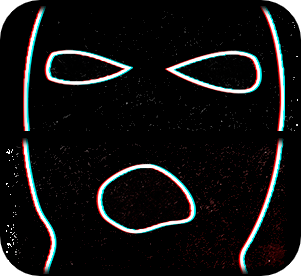
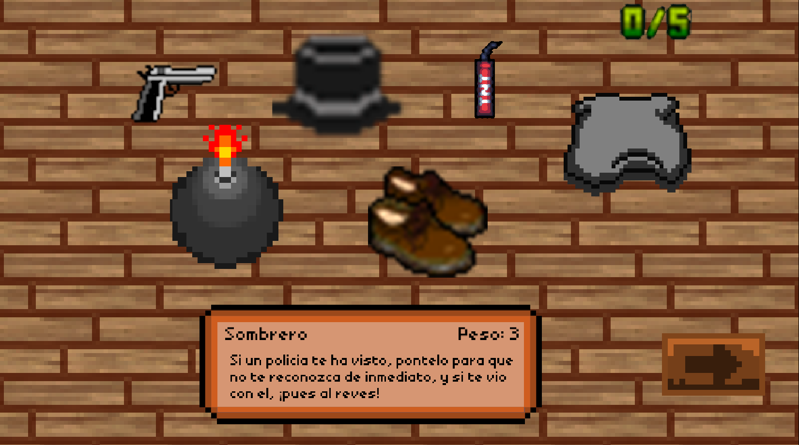
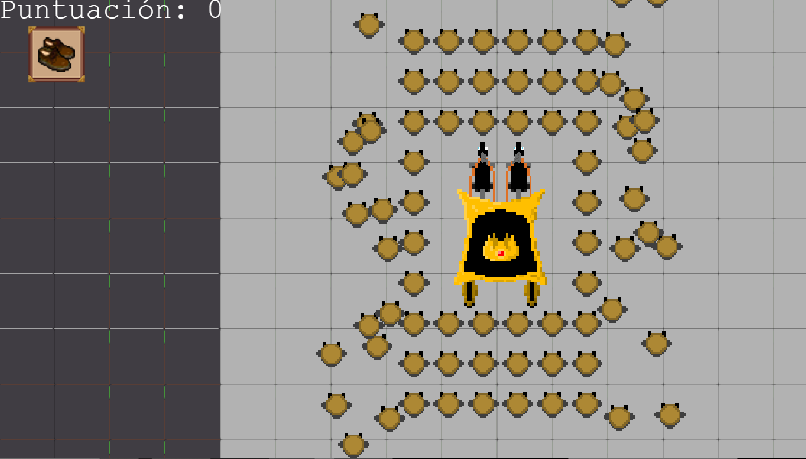

Brull

Brull es un videojuego web creado con JavaScript y Phaser top-down del género de acción y sigilo en el que el jugador debe realizar un ataque terrorista contra la Familia Real, siguiendo distintas fases dentro del nivel, escogiendo diferentes objetos que pueden ayudar a conseguir el éxito.
Brull encuentra su raíz en la novela "La Dama Errante" de Pío Baroja. Este juego te transporta a la España del siglo XX, permitiéndote encarnar a Brull y realizar el atentado como se realiza en la novela.
Contribuciones
Debido a que el grupo de trabajo estaba formado por 5 personas, mi trabajo consistió en parte del diseño de la página web, añadir algunas mecánicas del juego con respecto a los objetos y la creación y colisiones con el mapa de juego.
Imágenes

